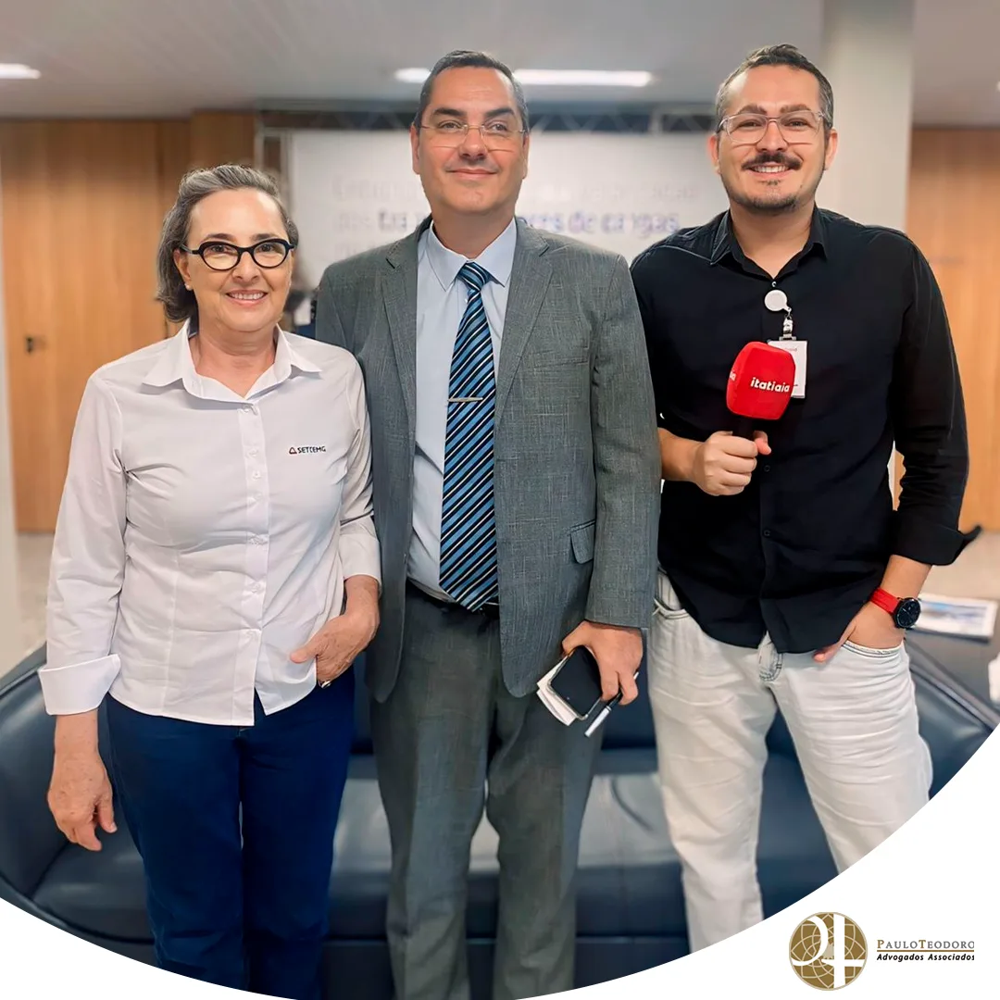

Exame Toxicológico para Motoristas Profissionais: Prazos e Consequências
No dia 29 de abril, o nosso sócio Dr. Jeferson Oliveira, também assessor jurídico do SETCEMG (Sindicato das Empresas de Transporte de Cargas do Estado de Minas Gerais), foi entrevistado pela Rádio Itatiaia, trazendo luz a um tema crucial para os motoristas profissionais: o exame toxicológico e os prazos aplicáveis às categorias C, D e E.
O foco da entrevista foi a importância de estar em dia com o exame toxicológico, um requisito vital para os condutores dessas categorias. Dr. Jeferson enfatizou que o prazo para realização desse exame está vinculado ao mês de vencimento da Carteira Nacional de Habilitação (CNH). Para os titulares de CNHs com vencimento entre janeiro e junho, o prazo final foi no dia 30 de abril. Já para aqueles com vencimento entre julho e dezembro, o prazo se estende até 30 de maio.
A não realização do exame dentro desses prazos pode resultar em consequências severas. Além de colocar em risco a segurança nas estradas, os motoristas podem enfrentar multas gravíssimas, que ultrapassam o valor de R$ 1.400,00, e receber 7 pontos na CNH. Essas penalidades têm o potencial de impactar negativamente não apenas a vida profissional do condutor, mas também sua estabilidade financeira e até mesmo sua reputação.


A entrevista completa está disponível na transmissão do programa Jornal da Itatiaia Primeira Edição, no YouTube, oferecendo uma visão mais abrangente sobre esse tema crucial para a segurança viária e para os profissionais do volante.
Paulo Teodoro – Advogados Associados
- Eventos
- Artigos
- Saiba mais sobre o escritório ▸